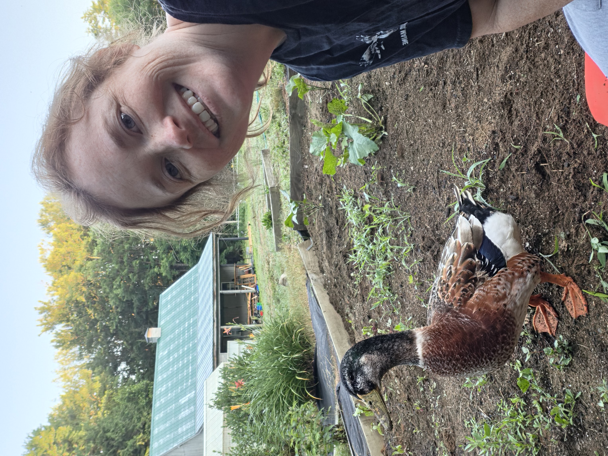
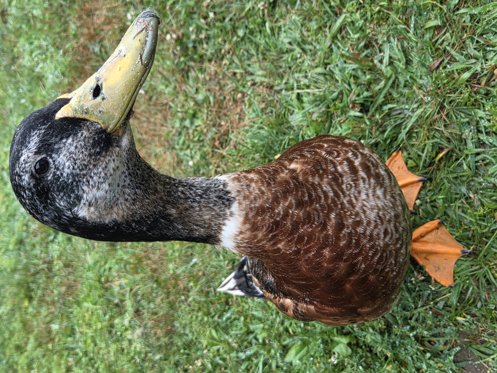
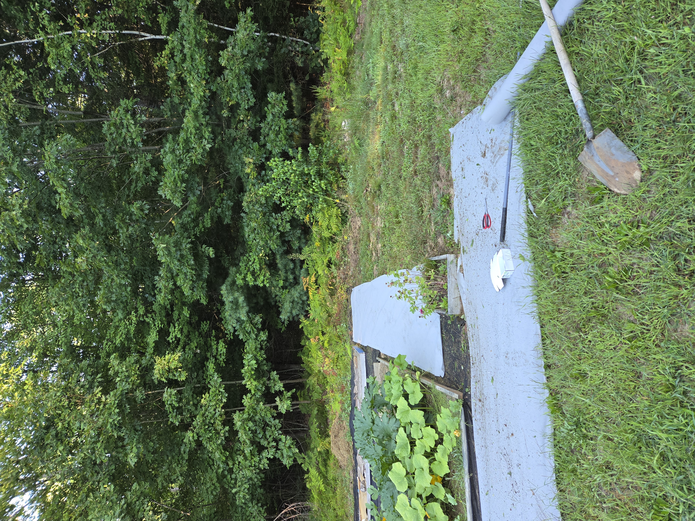
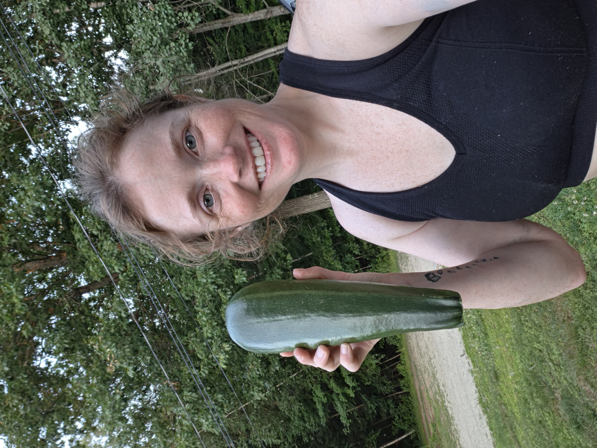

Building the Homestead
Follow each project as the property changes from where we started into the homestead we’re working toward.
Welcome to Groots Garden, where you can grow your garden with Groot and me while we build a functional homestead from the ground up.
Start Our Story
My name is Tara, and I moved to Maine over a decade ago with the hopes and dreams of someday living on a functional homestead. After a couple of “wrong turns” and A LOT of prayer, I’ve finally been given the opportunity to make those dreams come true.
You have arrived at a phenomenal time, because you can join me and Groot as I build this homestead from the ground up myself; learning, creating, growing and improving the property one project at a time.
Along the way, I hope to share not only the journey, but eventually some of what we produce here at Groots Garden with you and your families.
The journey officially began in April 2026, so we are VERY much in the beginning stages. That means you’re arriving at the perfect time to grab a seat and enjoy the show and take notes!
I’ll be blogging the entire journey here, and you can follow along on social media for all things Groots Garden — plus the miscellaneous projects we inevitably have going on around the property and the random farm shenanigans.
“Learning as we go. Growing a little more every season.”
Groots Garden • MaineGroots Garden gets its name from the property’s resident duck, my right-hand man, Groot.
Groot makes sure to involve himself in just about every part of our daily lives, and growing vegetables is certainly no exception. He considers himself something of a master gardener.
You’ll see plenty of him around here as he supervises projects, investigates the garden and generally makes himself part of whatever I happen to be working on. You can hear him in most videos sharing his many opinions in the background.
This may technically be my homestead project, but Groot would probably tell you otherwise.


This isn’t a finished homestead with years of polished systems already in place. We’re building it here and now.
Beds are being rebuilt. New plants are going in. Projects are being tried, changed, improved and occasionally started over completely (I am a fan of trial and error learning) .
I want Groots Garden to document the real process; what works, what doesn’t, what I learn and what I would do differently next time.
If you’re building your own garden, dreaming about a homestead or simply enjoy seeing one come together, you’re welcome to learn and grow right alongside us.
Groots Garden is still growing into what it will eventually become. These are some of the areas we’re developing along the way.
Everyday favorites, unusual varieties and plenty of garden experiments.
Herbs for cooking, drying, teas, preservation and future handmade goods.
Plants grown with Maine gardens in mind, with our first sales planned for Spring 2027.
Future preserved foods, dried goods, crafts and whatever else this property teaches us to create.
As I learn and master more of the crafts that come with homesteading — gardening, food preservation and creating with what the property has to offer — the inventory here will grow right along with me.
The goal is to eventually share pieces of Groots Garden with you: seedlings, garden goods and other products created from what we grow, preserve and make here on the property.
There is plenty more to come.

I plan to have seedlings available for sale beginning Spring 2027. There will be much more information to come, but stick around for the opportunity to grow your vegetable and herb garden right alongside us.
Follow the JourneyThe journal will document the entire process of turning this property into a functioning homestead — garden projects, harvests, animals, mistakes, successes and whatever else happens along the way.
Follow each project as the property changes from where we started into the homestead we’re working toward.
What we’re planting, growing, harvesting and learning through the Maine seasons.
Garden supervision, duck opinions and the everyday adventures of Groots Garden’s self-appointed manager.
Follow Groots Garden as we build, grow, learn and figure this whole homesteading thing out one project at a time.
Email: tarat@grootsgarden.com
Social media links and additional ways to connect will be added here as the website grows.